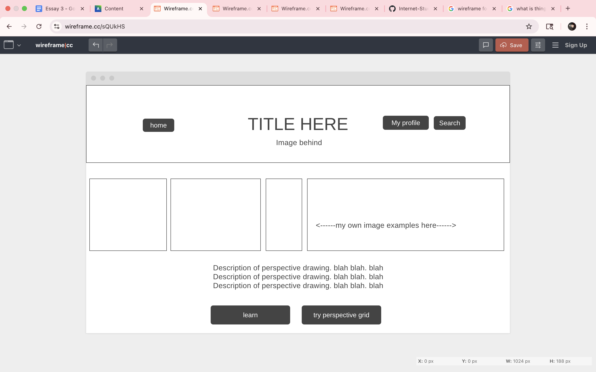
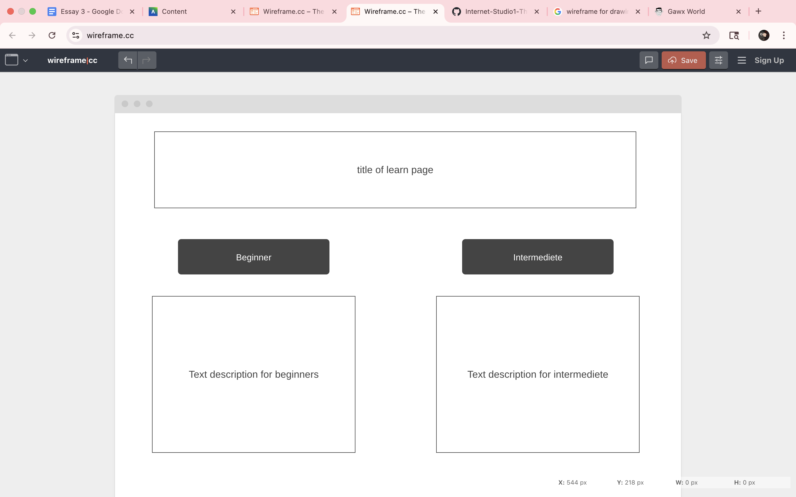
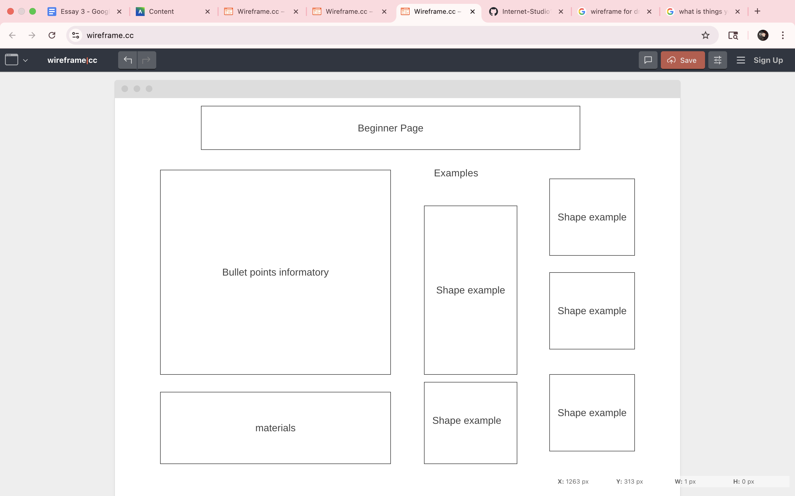
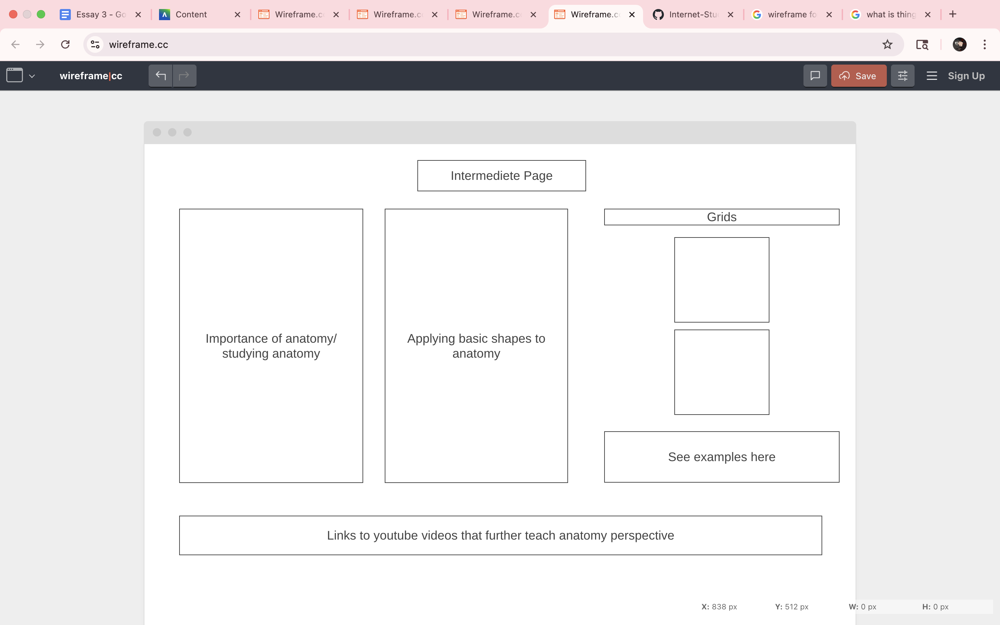

From The Guide to Wireframing, sketching a wireframes pros include speed, the ability to draw a wireframe quickly on a piece of paper, flexibility, and limited distractions, becuase there are no additives like font, color or any styling components to get in the way of sketching a wireframe. On the other hand, things like low fidelity, non-interaction,limited collaberation, and no version control stand as cons to sketching wireframes. They are not as neat and organized, and the ability to edit is taken away.
The best option for my project would be to use software to create wireframes, which I did. Sketching could help me kind of get a rough idea of what I want my website to look like. I would then transfer those ideas to software wireframing to better depict how every component I would like to include. Things like buttons, boxes, pictures, and paragraphs would appear nicely in comparison to a sketch. If I chose a sketch it would be more time consuming because I would spend majority of the time focusing on perfecting the composition. I think software wireframing is more efficient.
Here are my wireframes!
   